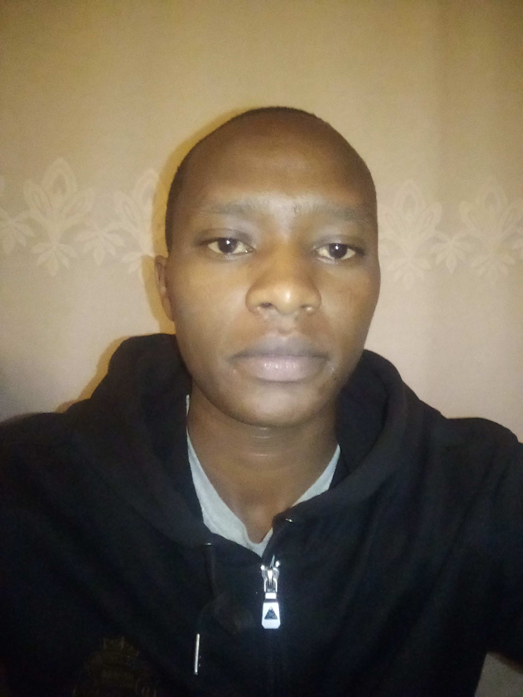

Data Science: Foundations Using R
- The Data Scientist's Toolbox
- R Programming
- Getting And Cleaning Data
- Exploratory Data Analysis
- Reproducible Research
Web Design For Everyone
- Introduction to HTML5
- Introduction to CSS3
I have completed some of the courses above. I am currently taking some of them. I plan to enroll as many courses as possible before the end of the year. God willing, I will get what I am looking for.
font-size
Options
- xx-small,x-small,small,,smaller
- medium
- large,x-large,xx-large,larger
- Use pixel
- Use %
Can We call It Love?
 I have lived a life of favor.The almighty God has never rejected me. I am aware of my sins. I have neglect repentance. I started failing the day I started making wrong decision. I am waiting for a painful suffering for my sins. i hope God has mercy. I pray that he'll forgive me.
I have lived a life of favor.The almighty God has never rejected me. I am aware of my sins. I have neglect repentance. I started failing the day I started making wrong decision. I am waiting for a painful suffering for my sins. i hope God has mercy. I pray that he'll forgive me.
I have lived a life of favor.The almighty God has never rejected me. I am aware of my sins. I have neglect repentance. I started failing the day I started making wrong decision. I am waiting for a painful suffering for my sins. i hope God has mercy. I pray that he'll forgive me.
I have lived a life of favor.The almighty God has never rejected me. I am aware of my sins. I have neglect repentance. I started failing the day I started making wrong decision. I am waiting for a painful suffering for my sins. i hope God has mercy. I pray that he'll forgive me.
I may not be able to express my love for you. It is not a disability. It cannot be inability. It is about how you take it. Some people take it as a sign of weakness. Some take it as an outdated version of love. If I express the way they expect, people will complain. If I express the way I want, people will still complain. I will do what my mind and heart allows me to do.
In the end, Love is what makes us be who we are. Sometimes people may not love you, some will show you how much they hate you, some will deny you in the broad daylight. For me, the love of God is sufficient. It is a special love, that is freely given to those who seek Him through prayers, praise and service to humanity. It is unconditional love.
The kind of love that we get from our friends and dear ones at the begining is different from the kind of love we get at the end from the smae people. During the jour, life pressents a lot of challenges. Some are temptations, which falling into may cost the price of losing someone we love the most. Some are betrayals. Your dear ones may leave you in your moments of need. The aftermath may be despair, hopelessness, drugs, suicide among others.!!!
Chat Box
Span A Span B Span CParagraph A
Paragraph B
Paragraph C